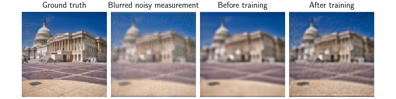
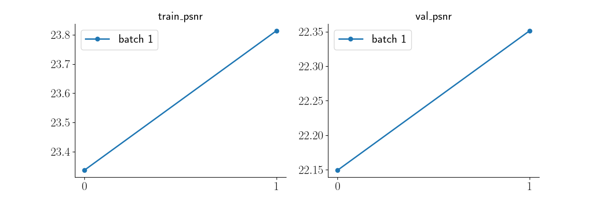

Note
New to DeepInverse? Get started with the basics with the 5 minute quickstart tutorial..
Distributed Training of Unfolded Networks#
In many large-scale imaging problems, the size of the image/volume to reconstruct is very large, making it impossible to train reconstruction networks (in this example, unfolded networks) with a single GPU.
The deepinv.distributed framework enables training a model on multiple GPUs, by carefully parallelizing the data fidelity and denoising steps inside the network.
This example shows how to combine:
the distributed framework (image/model parallelism over large images),
unfolded optimization with
deepinv.optim.DRS,standard training with
deepinv.Trainer.
Each GPU (rank) processes different parts/operators of the same image. This is not
standard data-parallel training (e.g., via torch.nn.parallel.DistributedDataParallel) over different images.
Usage:
# Single process
python examples/distributed/demo_unrolled_distributed.py
# Multi-process (2 ranks)
python -m torch.distributed.run --nproc_per_node=2 examples/distributed/demo_unrolled_distributed.py
Import modules#
import os
import torch
from torch.utils.data import DataLoader, Subset
from torchvision import transforms
import deepinv as dinv
from deepinv.datasets import HDF5Dataset, generate_dataset
from deepinv.distributed import DistributedContext, distribute
from deepinv.loss.metric import PSNR
from deepinv.models import DRUNet
from deepinv.optim import DRS
from deepinv.optim.data_fidelity import L2
from deepinv.optim.prior import PnP
from deepinv.physics import GaussianNoise, stack
from deepinv.physics.blur import Blur
from deepinv.physics.functional import gaussian_blur
from deepinv.utils import get_data_home
from deepinv.utils.plotting import plot, plot_curves
from deepinv.utils.tensorlist import TensorList
Dataset and Dataloader preparation helper functions#
In this example, we use the Urban100 dataset to generate measurements for
training and validation. For every clean image, deepinv.datasets.generate_dataset()
creates two blurred and noisy measurements. Only rank 0 downloads and generates
the dataset; the other ranks wait until both HDF5 files have been closed before
opening them.
def collate_batch(batch):
"""Collate clean/measured pairs while preserving TensorList measurements."""
if len(batch) == 1:
x, y = batch[0]
if x.ndim == 3:
x = x.unsqueeze(0)
y = TensorList([m.unsqueeze(0) if m.ndim == 3 else m for m in y])
return x, y
xs = [x for x, _ in batch]
ys = [y for _, y in batch]
x_batch = torch.stack(xs, dim=0)
n_ops = len(ys[0])
return x_batch, TensorList(
[torch.stack([yy[i] for yy in ys], dim=0) for i in range(n_ops)]
)
def prepare_dataset(
ctx: DistributedContext,
seed: int,
crop_size: int,
train_images: int,
val_images: int,
batch_size: int,
num_workers: int,
dataset_name: str,
):
"""Create/load Urban100 measurements for training and validation.
Important: all ranks iterate over the same batches since distribution is over
image content/operators, not over different images.
"""
blur_rngs = [
torch.Generator(device=ctx.device).manual_seed(seed + i) for i in range(2)
]
physics_list = [
Blur(
filter=gaussian_blur(sigma=(1.5, 1.5), device=str(ctx.device)),
padding="circular",
device=ctx.device,
noise_model=GaussianNoise(sigma=0.03, rng=blur_rngs[0]),
),
Blur(
filter=gaussian_blur(sigma=(2.0, 2.0), device=str(ctx.device)),
padding="circular",
device=ctx.device,
noise_model=GaussianNoise(sigma=0.05, rng=blur_rngs[1]),
),
]
stacked_physics = stack(*physics_list)
data_root = get_data_home() / "Urban100"
os.makedirs(data_root, exist_ok=True)
transform = transforms.Compose(
[
transforms.Resize(crop_size),
transforms.CenterCrop(crop_size),
transforms.ToTensor(),
]
)
if ctx.rank == 0:
base_dataset = dinv.datasets.Urban100HR(
root=str(data_root), download=True, transform=transform
)
max_images = min(len(base_dataset), train_images + val_images)
train_base = Subset(base_dataset, list(range(train_images)))
val_base = Subset(base_dataset, list(range(train_images, max_images)))
generate_dataset(
train_dataset=train_base,
physics=stacked_physics,
save_dir=str(data_root),
dataset_filename=f"{dataset_name}_train",
device=ctx.device,
train_datapoints=train_images,
num_workers=num_workers,
)
generate_dataset(
train_dataset=val_base,
physics=stacked_physics,
save_dir=str(data_root),
dataset_filename=f"{dataset_name}_val",
device=ctx.device,
train_datapoints=len(val_base),
num_workers=num_workers,
)
# generate_dataset closes each HDF5 file before returning. The data directory
# must be on storage shared by all ranks. ctx.barrier() ensures that all ranks wait
# until the HDF5 files are closed before opening them.
ctx.barrier()
train_ds = HDF5Dataset(
path=str(data_root / f"{dataset_name}_train0.h5"), train=True
)
val_ds = HDF5Dataset(path=str(data_root / f"{dataset_name}_val0.h5"), train=True)
train_generator = torch.Generator().manual_seed(seed + 123)
val_generator = torch.Generator().manual_seed(seed + 456)
train_loader = DataLoader(
train_ds,
batch_size=batch_size,
shuffle=True,
generator=train_generator,
num_workers=num_workers,
collate_fn=collate_batch,
)
val_loader = DataLoader(
val_ds,
batch_size=batch_size,
shuffle=False,
generator=val_generator,
num_workers=num_workers,
collate_fn=collate_batch,
)
return stacked_physics, train_loader, val_loader
Configuration#
Settings for training and distributed processing. patch_size and overlap control the size of the image patches that each rank processes, and how much they overlap with each other.
Note
The following settings are for demonstration purposes. We recommend training for more epochs to get better results.
seed = 0
n_unroll = 3 # Number of unrolled iterations (DRS steps).
crop_size = 128 if torch.cuda.is_available() else 64
# Training and dataloader settings
epochs = 2 if torch.cuda.is_available() else 1
batch_size = 1
train_images = 16 if torch.cuda.is_available() else 6
val_images = 6 if torch.cuda.is_available() else 4
learning_rate = 2e-4
num_workers = 4 if torch.cuda.is_available() else 0
# Distributed processing settings
patch_size = crop_size // 2
overlap = max(8, patch_size // 8)
_ = torch.manual_seed(seed)
Build distributed physics/model and train with deepinv.Trainer#
The distributed framework allows to distribute unfolded network with a few simple steps:
Initialize the distributed context
Prepare the physics, model, trainer and dataloaders
Call
deepinv.distributed.distribute()to distribute the physics and model across ranksTrain with
deepinv.Traineras usual.
The framework takes care of synchronizing the forward/backward passes across ranks, and communicating the necessary information between them.
Reload checkpoints with the usual DeepInverse Trainer API. In this run, rank 0 can call model = trainer.load_best_model(). In a new script,
rebuild the same model and Trainer, then call trainer.load_model("ckpts/distributed_unfolded_drs/<timestamp>/ckp_best.pth.tar").
No rank-specific path or distributed checkpoint API is needed.
# Keep identical random streams across ranks: this framework splits each image
# across devices, so all ranks should consume the same minibatches.
with DistributedContext(seed=seed, seed_offset=False) as ctx:
if ctx.rank == 0:
print(f"Processes: {ctx.world_size}")
print(f"Device: {ctx.device}")
stacked_physics, train_loader, val_loader = prepare_dataset(
ctx,
seed=seed,
crop_size=crop_size,
train_images=train_images,
val_images=val_images,
batch_size=batch_size,
num_workers=num_workers,
dataset_name="urban100_drs_blur_noise",
)
# Distribute the stacked physics across ranks.
distributed_physics = distribute(
stacked_physics,
ctx,
)
# Build an unfolded DRS model and distribute trainable components.
denoiser = DRUNet(pretrained="download").to(ctx.device)
prior = PnP(denoiser=denoiser)
model = DRS(
stepsize=[0.9] * n_unroll,
sigma_denoiser=[0.04] * n_unroll,
beta=[1.0] * n_unroll,
trainable_params=["stepsize", "sigma_denoiser", "beta"],
data_fidelity=L2(),
prior=prior,
max_iter=n_unroll,
unfold=True,
)
model = distribute(
model,
ctx,
patch_size=patch_size,
overlap=overlap,
max_batch_size=1,
)
optimizer = torch.optim.Adam(model.parameters(), lr=learning_rate)
psnr_metric = PSNR(reduction="mean")
# The trainable model parameters are synchronized across ranks, so every
# rank holds equivalent weights. Save only one representative checkpoint.
checkpoint_root = "ckpts/distributed_unfolded_drs" if ctx.rank == 0 else None
# Reconstruction before training.
demo_x, demo_y = next(iter(val_loader))
demo_x = demo_x.to(ctx.device)
demo_y = demo_y.to(ctx.device)
with torch.no_grad():
demo_rec_before = model(demo_y, distributed_physics)
trainer = dinv.Trainer(
model=model,
physics=distributed_physics,
epochs=epochs,
device=ctx.device,
losses=[dinv.loss.SupLoss(metric=dinv.metric.MSE())],
metrics=psnr_metric,
optimizer=optimizer,
train_dataloader=train_loader,
eval_dataloader=val_loader,
grad_clip=1.0,
compare_no_learning=False,
save_path=checkpoint_root,
verbose=(ctx.rank == 0),
show_progress_bar=(ctx.rank == 0),
freq_update_progress_bar=5,
check_grad=True,
non_blocking_transfers=False,
)
trainer.train()
with torch.no_grad():
demo_rec_after = model(demo_y, distributed_physics)
# Display training summary and qualitative result (rank 0 only)
if ctx.rank == 0:
train_history = trainer.train_metrics_history.get("PSNR", [])
val_history = trainer.eval_metrics_history.get("PSNR", [])
final_steps = [f"{p.item():.4f}" for p in model.params_algo["stepsize"]]
print(f"Final trainable stepsizes: {final_steps}")
if val_history:
print(f"Final val PSNR: {val_history[-1]:.2f} dB")
plot(
[demo_x, demo_y[0], demo_rec_before, demo_rec_after],
titles=[
"Ground truth",
"Blurred noisy measurement",
"Before training",
"After training",
],
save_fn="distributed_unrolled_result.png",
)
if train_history and val_history and len(train_history) > 1:
plot_curves({"train_psnr": [train_history], "val_psnr": [val_history]})
print("Saved: distributed_unrolled_result.png")


Processes: 1
Device: cuda:0
/local/jtachell/deepinv/deepinv/examples/distributed/demo_unrolled_distributed.py:119: DeprecationWarning: Function 'get_data_home' is deprecated and will be removed in a future version.
data_root = get_data_home() / "Urban100"
0%| | 0/135388067 [00:00<?, ?it/s]
0%| | 64.0k/129M [00:00<11:33, 195kB/s]
3%|▎ | 4.50M/129M [00:00<00:09, 14.0MB/s]
13%|█▎ | 16.4M/129M [00:00<00:02, 47.1MB/s]
21%|██ | 27.4M/129M [00:00<00:01, 67.2MB/s]
30%|██▉ | 38.2M/129M [00:00<00:01, 81.1MB/s]
38%|███▊ | 49.1M/129M [00:00<00:00, 90.9MB/s]
47%|████▋ | 60.1M/129M [00:00<00:00, 98.1MB/s]
55%|█████▌ | 71.1M/129M [00:01<00:00, 103MB/s]
64%|██████▎ | 82.1M/129M [00:01<00:00, 107MB/s]
72%|███████▏ | 93.1M/129M [00:01<00:00, 109MB/s]
81%|████████ | 104M/129M [00:01<00:00, 111MB/s]
89%|████████▉ | 115M/129M [00:01<00:00, 112MB/s]
98%|█████████▊| 126M/129M [00:01<00:00, 113MB/s]
100%|██████████| 129M/129M [00:01<00:00, 83.6MB/s]
Extracting: 0%| | 0/101 [00:00<?, ?it/s]
Extracting: 6%|▌ | 6/101 [00:00<00:01, 55.64it/s]
Extracting: 12%|█▏ | 12/101 [00:00<00:01, 50.76it/s]
Extracting: 18%|█▊ | 18/101 [00:00<00:01, 47.42it/s]
Extracting: 23%|██▎ | 23/101 [00:00<00:01, 47.07it/s]
Extracting: 28%|██▊ | 28/101 [00:00<00:01, 45.20it/s]
Extracting: 37%|███▋ | 37/101 [00:00<00:01, 58.00it/s]
Extracting: 44%|████▎ | 44/101 [00:00<00:00, 61.22it/s]
Extracting: 51%|█████▏ | 52/101 [00:00<00:00, 66.77it/s]
Extracting: 58%|█████▊ | 59/101 [00:01<00:00, 58.19it/s]
Extracting: 65%|██████▌ | 66/101 [00:01<00:00, 60.24it/s]
Extracting: 72%|███████▏ | 73/101 [00:01<00:00, 49.19it/s]
Extracting: 78%|███████▊ | 79/101 [00:01<00:00, 50.21it/s]
Extracting: 84%|████████▍ | 85/101 [00:01<00:00, 47.25it/s]
Extracting: 92%|█████████▏| 93/101 [00:01<00:00, 51.88it/s]
Extracting: 98%|█████████▊| 99/101 [00:01<00:00, 48.32it/s]
Extracting: 100%|██████████| 101/101 [00:01<00:00, 52.55it/s]
Dataset has been successfully downloaded.
Dataset has been saved at datasets/Urban100/urban100_drs_blur_noise_train0.h5
Dataset has been saved at datasets/Urban100/urban100_drs_blur_noise_val0.h5
/local/jtachell/deepinv/deepinv/deepinv/optim/linear/least_squares.py:426: UserWarning: Warning: least_squares_implicit_backward does not support TensorList inputs. Falling back to standard least_squares with full backpropagation.
warnings.warn(
/local/jtachell/deepinv/deepinv/deepinv/distributed/strategies/distributed_strategies.py:367: UserWarning: No tiling_dims provided. Assuming last 2 dimensions: (-2, -1). If your layout is different, please provide tiling_dims explicitly.
warnings.warn(
The model has 32640969 trainable parameters
0%| | 0/16 [00:00<?, ?it/s]
Train epoch 1/2: 0%| | 0/16 [00:00<?, ?it/s]
Train epoch 1/2: 0%| | 0/16 [00:02<?, ?it/s, TotalLoss=0.00945, gradient_norm=0.0906, PSNR=20.2]
Train epoch 1/2: 6%|▋ | 1/16 [00:02<00:33, 2.27s/it, TotalLoss=0.00945, gradient_norm=0.0906, PSNR=20.2]
Train epoch 1/2: 6%|▋ | 1/16 [00:02<00:33, 2.27s/it, TotalLoss=0.00945, gradient_norm=0.0906, PSNR=20.2]
Train epoch 1/2: 12%|█▎ | 2/16 [00:02<00:17, 1.26s/it, TotalLoss=0.00945, gradient_norm=0.0906, PSNR=20.2]
Train epoch 1/2: 12%|█▎ | 2/16 [00:02<00:17, 1.26s/it, TotalLoss=0.00945, gradient_norm=0.0906, PSNR=20.2]
Train epoch 1/2: 19%|█▉ | 3/16 [00:03<00:12, 1.07it/s, TotalLoss=0.00945, gradient_norm=0.0906, PSNR=20.2]
Train epoch 1/2: 19%|█▉ | 3/16 [00:03<00:12, 1.07it/s, TotalLoss=0.00945, gradient_norm=0.0906, PSNR=20.2]
Train epoch 1/2: 25%|██▌ | 4/16 [00:03<00:09, 1.23it/s, TotalLoss=0.00945, gradient_norm=0.0906, PSNR=20.2]
Train epoch 1/2: 25%|██▌ | 4/16 [00:03<00:09, 1.23it/s, TotalLoss=0.00945, gradient_norm=0.0906, PSNR=20.2]
Train epoch 1/2: 31%|███▏ | 5/16 [00:04<00:07, 1.40it/s, TotalLoss=0.00945, gradient_norm=0.0906, PSNR=20.2]
Train epoch 1/2: 31%|███▏ | 5/16 [00:04<00:07, 1.40it/s, TotalLoss=0.00945, gradient_norm=0.0906, PSNR=20.2]
Train epoch 1/2: 31%|███▏ | 5/16 [00:05<00:07, 1.40it/s, TotalLoss=0.00595, gradient_norm=0.0918, PSNR=22.8]
Train epoch 1/2: 38%|███▊ | 6/16 [00:05<00:06, 1.51it/s, TotalLoss=0.00595, gradient_norm=0.0918, PSNR=22.8]
Train epoch 1/2: 38%|███▊ | 6/16 [00:05<00:06, 1.51it/s, TotalLoss=0.00595, gradient_norm=0.0918, PSNR=22.8]
Train epoch 1/2: 44%|████▍ | 7/16 [00:05<00:05, 1.60it/s, TotalLoss=0.00595, gradient_norm=0.0918, PSNR=22.8]
Train epoch 1/2: 44%|████▍ | 7/16 [00:05<00:05, 1.60it/s, TotalLoss=0.00595, gradient_norm=0.0918, PSNR=22.8]
Train epoch 1/2: 50%|█████ | 8/16 [00:06<00:04, 1.63it/s, TotalLoss=0.00595, gradient_norm=0.0918, PSNR=22.8]
Train epoch 1/2: 50%|█████ | 8/16 [00:06<00:04, 1.63it/s, TotalLoss=0.00595, gradient_norm=0.0918, PSNR=22.8]
Train epoch 1/2: 56%|█████▋ | 9/16 [00:06<00:04, 1.68it/s, TotalLoss=0.00595, gradient_norm=0.0918, PSNR=22.8]
Train epoch 1/2: 56%|█████▋ | 9/16 [00:06<00:04, 1.68it/s, TotalLoss=0.00595, gradient_norm=0.0918, PSNR=22.8]
Train epoch 1/2: 62%|██████▎ | 10/16 [00:07<00:03, 1.67it/s, TotalLoss=0.00595, gradient_norm=0.0918, PSNR=22.8]
Train epoch 1/2: 62%|██████▎ | 10/16 [00:07<00:03, 1.67it/s, TotalLoss=0.00595, gradient_norm=0.0918, PSNR=22.8]
Train epoch 1/2: 62%|██████▎ | 10/16 [00:07<00:03, 1.67it/s, TotalLoss=0.00512, gradient_norm=0.0669, PSNR=23.4]
Train epoch 1/2: 69%|██████▉ | 11/16 [00:07<00:02, 1.67it/s, TotalLoss=0.00512, gradient_norm=0.0669, PSNR=23.4]
Train epoch 1/2: 69%|██████▉ | 11/16 [00:07<00:02, 1.67it/s, TotalLoss=0.00512, gradient_norm=0.0669, PSNR=23.4]
Train epoch 1/2: 75%|███████▌ | 12/16 [00:08<00:02, 1.71it/s, TotalLoss=0.00512, gradient_norm=0.0669, PSNR=23.4]
Train epoch 1/2: 75%|███████▌ | 12/16 [00:08<00:02, 1.71it/s, TotalLoss=0.00512, gradient_norm=0.0669, PSNR=23.4]
Train epoch 1/2: 81%|████████▏ | 13/16 [00:09<00:01, 1.69it/s, TotalLoss=0.00512, gradient_norm=0.0669, PSNR=23.4]
Train epoch 1/2: 81%|████████▏ | 13/16 [00:09<00:01, 1.69it/s, TotalLoss=0.00512, gradient_norm=0.0669, PSNR=23.4]
Train epoch 1/2: 88%|████████▊ | 14/16 [00:09<00:01, 1.73it/s, TotalLoss=0.00512, gradient_norm=0.0669, PSNR=23.4]
Train epoch 1/2: 88%|████████▊ | 14/16 [00:09<00:01, 1.73it/s, TotalLoss=0.00512, gradient_norm=0.0669, PSNR=23.4]
Train epoch 1/2: 94%|█████████▍| 15/16 [00:10<00:00, 1.76it/s, TotalLoss=0.00512, gradient_norm=0.0669, PSNR=23.4]
Train epoch 1/2: 94%|█████████▍| 15/16 [00:10<00:00, 1.76it/s, TotalLoss=0.00512, gradient_norm=0.0669, PSNR=23.4]
Train epoch 1/2: 94%|█████████▍| 15/16 [00:10<00:00, 1.76it/s, TotalLoss=0.00511, gradient_norm=0.0531, PSNR=23.3]
Train epoch 1/2: 100%|██████████| 16/16 [00:11<00:00, 1.37it/s, TotalLoss=0.00511, gradient_norm=0.0531, PSNR=23.3]
Train epoch 1/2: 100%|██████████| 16/16 [00:11<00:00, 1.41it/s, TotalLoss=0.00511, gradient_norm=0.0531, PSNR=23.3]
0%| | 0/6 [00:00<?, ?it/s]
Eval epoch 1/2: 0%| | 0/6 [00:00<?, ?it/s]
Eval epoch 1/2: 0%| | 0/6 [00:00<?, ?it/s, PSNR=25.3]
Eval epoch 1/2: 17%|█▋ | 1/6 [00:00<00:01, 3.99it/s, PSNR=25.3]
Eval epoch 1/2: 17%|█▋ | 1/6 [00:00<00:01, 3.99it/s, PSNR=25.3]
Eval epoch 1/2: 17%|█▋ | 1/6 [00:00<00:01, 3.99it/s, PSNR=24]
Eval epoch 1/2: 33%|███▎ | 2/6 [00:00<00:00, 4.33it/s, PSNR=24]
Eval epoch 1/2: 33%|███▎ | 2/6 [00:00<00:00, 4.33it/s, PSNR=24]
Eval epoch 1/2: 33%|███▎ | 2/6 [00:00<00:00, 4.33it/s, PSNR=24.3]
Eval epoch 1/2: 50%|█████ | 3/6 [00:00<00:00, 4.48it/s, PSNR=24.3]
Eval epoch 1/2: 50%|█████ | 3/6 [00:00<00:00, 4.48it/s, PSNR=24.3]
Eval epoch 1/2: 50%|█████ | 3/6 [00:00<00:00, 4.48it/s, PSNR=22.9]
Eval epoch 1/2: 67%|██████▋ | 4/6 [00:00<00:00, 4.52it/s, PSNR=22.9]
Eval epoch 1/2: 67%|██████▋ | 4/6 [00:00<00:00, 4.52it/s, PSNR=22.9]
Eval epoch 1/2: 67%|██████▋ | 4/6 [00:01<00:00, 4.52it/s, PSNR=22.1]
Eval epoch 1/2: 83%|████████▎ | 5/6 [00:01<00:00, 4.54it/s, PSNR=22.1]
Eval epoch 1/2: 83%|████████▎ | 5/6 [00:01<00:00, 4.54it/s, PSNR=22.1]
Eval epoch 1/2: 83%|████████▎ | 5/6 [00:01<00:00, 4.54it/s, PSNR=22.1]
Eval epoch 1/2: 100%|██████████| 6/6 [00:01<00:00, 4.59it/s, PSNR=22.1]
Eval epoch 1/2: 100%|██████████| 6/6 [00:01<00:00, 4.51it/s, PSNR=22.1]
Best model saved at epoch 1
0%| | 0/16 [00:00<?, ?it/s]
Train epoch 2/2: 0%| | 0/16 [00:00<?, ?it/s]
Train epoch 2/2: 0%| | 0/16 [00:00<?, ?it/s, TotalLoss=0.00862, gradient_norm=0.025, PSNR=20.6]
Train epoch 2/2: 6%|▋ | 1/16 [00:00<00:08, 1.70it/s, TotalLoss=0.00862, gradient_norm=0.025, PSNR=20.6]
Train epoch 2/2: 6%|▋ | 1/16 [00:00<00:08, 1.70it/s, TotalLoss=0.00862, gradient_norm=0.025, PSNR=20.6]
Train epoch 2/2: 12%|█▎ | 2/16 [00:01<00:07, 1.78it/s, TotalLoss=0.00862, gradient_norm=0.025, PSNR=20.6]
Train epoch 2/2: 12%|█▎ | 2/16 [00:01<00:07, 1.78it/s, TotalLoss=0.00862, gradient_norm=0.025, PSNR=20.6]
Train epoch 2/2: 19%|█▉ | 3/16 [00:01<00:07, 1.78it/s, TotalLoss=0.00862, gradient_norm=0.025, PSNR=20.6]
Train epoch 2/2: 19%|█▉ | 3/16 [00:01<00:07, 1.78it/s, TotalLoss=0.00862, gradient_norm=0.025, PSNR=20.6]
Train epoch 2/2: 25%|██▌ | 4/16 [00:02<00:06, 1.77it/s, TotalLoss=0.00862, gradient_norm=0.025, PSNR=20.6]
Train epoch 2/2: 25%|██▌ | 4/16 [00:02<00:06, 1.77it/s, TotalLoss=0.00862, gradient_norm=0.025, PSNR=20.6]
Train epoch 2/2: 31%|███▏ | 5/16 [00:02<00:06, 1.77it/s, TotalLoss=0.00862, gradient_norm=0.025, PSNR=20.6]
Train epoch 2/2: 31%|███▏ | 5/16 [00:02<00:06, 1.77it/s, TotalLoss=0.00862, gradient_norm=0.025, PSNR=20.6]
Train epoch 2/2: 31%|███▏ | 5/16 [00:03<00:06, 1.77it/s, TotalLoss=0.00562, gradient_norm=0.0253, PSNR=23.2]
Train epoch 2/2: 38%|███▊ | 6/16 [00:03<00:05, 1.75it/s, TotalLoss=0.00562, gradient_norm=0.0253, PSNR=23.2]
Train epoch 2/2: 38%|███▊ | 6/16 [00:03<00:05, 1.75it/s, TotalLoss=0.00562, gradient_norm=0.0253, PSNR=23.2]
Train epoch 2/2: 44%|████▍ | 7/16 [00:03<00:05, 1.78it/s, TotalLoss=0.00562, gradient_norm=0.0253, PSNR=23.2]
Train epoch 2/2: 44%|████▍ | 7/16 [00:03<00:05, 1.78it/s, TotalLoss=0.00562, gradient_norm=0.0253, PSNR=23.2]
Train epoch 2/2: 50%|█████ | 8/16 [00:04<00:04, 1.79it/s, TotalLoss=0.00562, gradient_norm=0.0253, PSNR=23.2]
Train epoch 2/2: 50%|█████ | 8/16 [00:04<00:04, 1.79it/s, TotalLoss=0.00562, gradient_norm=0.0253, PSNR=23.2]
Train epoch 2/2: 56%|█████▋ | 9/16 [00:05<00:03, 1.79it/s, TotalLoss=0.00562, gradient_norm=0.0253, PSNR=23.2]
Train epoch 2/2: 56%|█████▋ | 9/16 [00:05<00:03, 1.79it/s, TotalLoss=0.00562, gradient_norm=0.0253, PSNR=23.2]
Train epoch 2/2: 62%|██████▎ | 10/16 [00:05<00:03, 1.77it/s, TotalLoss=0.00562, gradient_norm=0.0253, PSNR=23.2]
Train epoch 2/2: 62%|██████▎ | 10/16 [00:05<00:03, 1.77it/s, TotalLoss=0.00562, gradient_norm=0.0253, PSNR=23.2]
Train epoch 2/2: 62%|██████▎ | 10/16 [00:06<00:03, 1.77it/s, TotalLoss=0.00481, gradient_norm=0.0214, PSNR=23.7]
Train epoch 2/2: 69%|██████▉ | 11/16 [00:06<00:02, 1.77it/s, TotalLoss=0.00481, gradient_norm=0.0214, PSNR=23.7]
Train epoch 2/2: 69%|██████▉ | 11/16 [00:06<00:02, 1.77it/s, TotalLoss=0.00481, gradient_norm=0.0214, PSNR=23.7]
Train epoch 2/2: 75%|███████▌ | 12/16 [00:06<00:02, 1.72it/s, TotalLoss=0.00481, gradient_norm=0.0214, PSNR=23.7]
Train epoch 2/2: 75%|███████▌ | 12/16 [00:06<00:02, 1.72it/s, TotalLoss=0.00481, gradient_norm=0.0214, PSNR=23.7]
Train epoch 2/2: 81%|████████▏ | 13/16 [00:07<00:01, 1.69it/s, TotalLoss=0.00481, gradient_norm=0.0214, PSNR=23.7]
Train epoch 2/2: 81%|████████▏ | 13/16 [00:07<00:01, 1.69it/s, TotalLoss=0.00481, gradient_norm=0.0214, PSNR=23.7]
Train epoch 2/2: 88%|████████▊ | 14/16 [00:08<00:01, 1.66it/s, TotalLoss=0.00481, gradient_norm=0.0214, PSNR=23.7]
Train epoch 2/2: 88%|████████▊ | 14/16 [00:08<00:01, 1.66it/s, TotalLoss=0.00481, gradient_norm=0.0214, PSNR=23.7]
Train epoch 2/2: 94%|█████████▍| 15/16 [00:08<00:00, 1.65it/s, TotalLoss=0.00481, gradient_norm=0.0214, PSNR=23.7]
Train epoch 2/2: 94%|█████████▍| 15/16 [00:08<00:00, 1.65it/s, TotalLoss=0.00481, gradient_norm=0.0214, PSNR=23.7]
Train epoch 2/2: 94%|█████████▍| 15/16 [00:09<00:00, 1.65it/s, TotalLoss=0.00458, gradient_norm=0.0203, PSNR=23.8]
Train epoch 2/2: 100%|██████████| 16/16 [00:09<00:00, 1.24it/s, TotalLoss=0.00458, gradient_norm=0.0203, PSNR=23.8]
Train epoch 2/2: 100%|██████████| 16/16 [00:09<00:00, 1.61it/s, TotalLoss=0.00458, gradient_norm=0.0203, PSNR=23.8]
0%| | 0/6 [00:00<?, ?it/s]
Eval epoch 2/2: 0%| | 0/6 [00:00<?, ?it/s]
Eval epoch 2/2: 0%| | 0/6 [00:00<?, ?it/s, PSNR=25.3]
Eval epoch 2/2: 17%|█▋ | 1/6 [00:00<00:01, 4.80it/s, PSNR=25.3]
Eval epoch 2/2: 17%|█▋ | 1/6 [00:00<00:01, 4.80it/s, PSNR=25.3]
Eval epoch 2/2: 17%|█▋ | 1/6 [00:00<00:01, 4.80it/s, PSNR=24.1]
Eval epoch 2/2: 33%|███▎ | 2/6 [00:00<00:00, 4.72it/s, PSNR=24.1]
Eval epoch 2/2: 33%|███▎ | 2/6 [00:00<00:00, 4.72it/s, PSNR=24.1]
Eval epoch 2/2: 33%|███▎ | 2/6 [00:00<00:00, 4.72it/s, PSNR=24.5]
Eval epoch 2/2: 50%|█████ | 3/6 [00:00<00:00, 5.71it/s, PSNR=24.5]
Eval epoch 2/2: 50%|█████ | 3/6 [00:00<00:00, 5.71it/s, PSNR=24.5]
Eval epoch 2/2: 50%|█████ | 3/6 [00:00<00:00, 5.71it/s, PSNR=23]
Eval epoch 2/2: 67%|██████▋ | 4/6 [00:00<00:00, 6.27it/s, PSNR=23]
Eval epoch 2/2: 67%|██████▋ | 4/6 [00:00<00:00, 6.27it/s, PSNR=23]
Eval epoch 2/2: 67%|██████▋ | 4/6 [00:00<00:00, 6.27it/s, PSNR=22.3]
Eval epoch 2/2: 83%|████████▎ | 5/6 [00:00<00:00, 6.73it/s, PSNR=22.3]
Eval epoch 2/2: 83%|████████▎ | 5/6 [00:00<00:00, 6.73it/s, PSNR=22.3]
Eval epoch 2/2: 83%|████████▎ | 5/6 [00:00<00:00, 6.73it/s, PSNR=22.4]
Eval epoch 2/2: 100%|██████████| 6/6 [00:00<00:00, 6.99it/s, PSNR=22.4]
Eval epoch 2/2: 100%|██████████| 6/6 [00:00<00:00, 6.31it/s, PSNR=22.4]
Best model saved at epoch 2
Final trainable stepsizes: ['0.9040', '0.9032', '0.9051']
Final val PSNR: 22.35 dB
Saved: distributed_unrolled_result.png
Total running time of the script: (0 minutes 55.585 seconds)